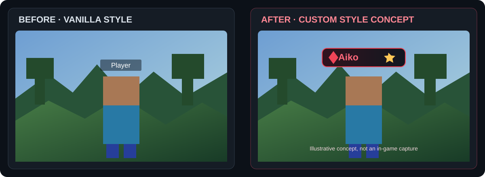

Project documentation
Make your nameplate yours.
Aiko's DisplayName Mod adds client-side styling controls for player nameplates in Minecraft Java Edition. Adjust colour, badges, health display options and visibility from the in-game editor without asking the server to install the mod.

This comparison is concept artwork to show the styling direction, not a screenshot captured from Minecraft. See Features and Compatibility for current implementation notes.
Appearance controls
Adjust name colour, gradient palette, background opacity, border and overall scale.
Local badges
Add a configurable symbol to your own client-side nameplate display.
Player overrides
Save local labels, colours and visibility preferences for individual players.
Health display
Use local health or scoreboard health when the server makes it available.
Getting started
- Install Fabric Loader for your Minecraft version.
- Install the matching Fabric API.
- Put the mod JAR in your instance's
modsfolder. - Launch the game and press
Right Shiftto open the editor.
Compatibility note: The JAR targets Minecraft 1.21.x, but not every patch has been individually verified in-game. Read Compatibility before describing a version as tested.